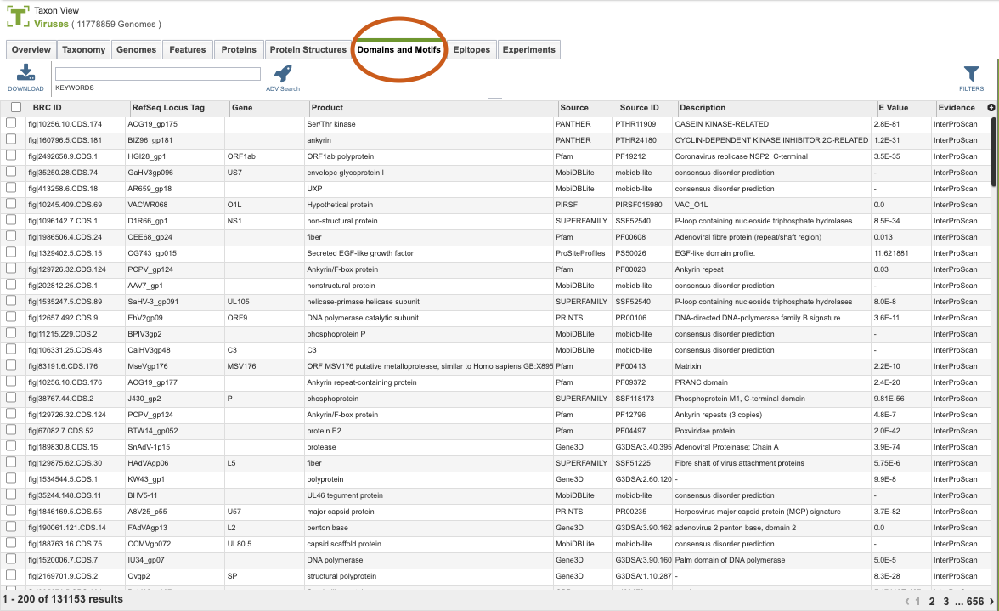
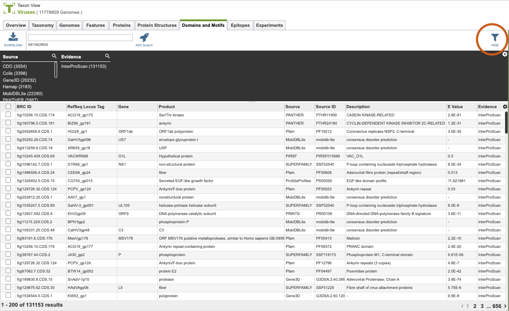

Domains and Motifs¶
Overview¶
The Domains and Motifs Tab provides a table of all the annotated protein domains and motifs corresponding to the selected Taxon View level or user-defined Group. From this page, domains and motifs can be sorted, filtered, collected into groups, and downloaded.
See also¶
Accessing the Domains and Motifs Table¶
Clicking the Domains and Motifs Tab in a Taxon View displays the Domains and Motif Table (shown below), listing all the predicted domains and motifs corresponding to the set of genomes in the selected taxon level.

The list in the Domain and Motifs table includes annotations of protein domains and motifs sourced from databases such as Pfam, SMART, and others. Annotations are derived from InterProScan - InterPro at EMBL-EBI, which provides functional analysis of proteins by classifying them into families and predicting domains and important sites.
Domain and Motifs Table Tools¶
Within this table you may do the following:
Download the entire contents of the table in text, CSV, or Excel format by clicking the Download button above the table on the left side. [
Rearrange and narrow the list of sequences in the table via sorting (using column headers), keywords (using the Keyword box), and filtering (using the Filters tool).
Filter Tool¶
As with all tables, the Filters tool is available to narrow the display of the items in the table, shown below:

Clicking on the Filters button at the top right of the table opens the Filter Panel above the table, displaying column names from the table and values for those columns with counts of occurrence. Clicking on the filter values narrows the list displayed in the table to those matching the chosen filter values. Clicking the Hide button closes the Filter Panel. More details are available in the Filter Tool Quick Reference Guide.
Sources for Domains and Motifs¶
More details are available in the Action Buttons Quick Reference Guide.